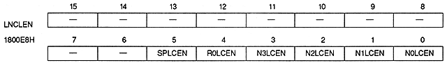
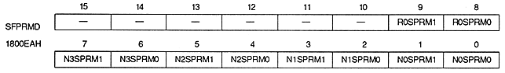

N0CAOS2 ~ N0CAOS0 | 1800E4H | bits 2-0 | NBG0 (or RBG1) |
N1CAOS2 to N1CAOS0 | 1800E4H | bits 6 to 4 | NBG1 (or EXBG) |
N2CAOS2 to N2CAOS0 | 1800E4H | bits 10 to 8 | NBG2 |
N3CAOS2 to N3CAOS0 | 1800E4H | bits 14 to 12 | NBG3 |
R0CAOS2 to R0CAOS0 | 1800E6H | bits 2 to 0 | for RBG0 |
SPCAOS2 to SPCAOS0 | 1800E6H | bits 6 to 4 | for sprites |

Line color screen enable bit : Line color enable bit
N0LCEN | 1800E8H | bit 0 | NBG0 (or RBG1) |
N1LCEN | 1800E8H | bit 1 | NBG1 (or EXBG) |
N2LCEN | 1800E8H | bit 2 | For NBG2 |
N3LCEN | 1800E8H | bit 3 | NBG3 |
R0LCEN | 1800E8H | bit 4 | for RBG0 |
SPLCEN | 1800E8H | bit 5 | For sprites |
xxLCEN | Processing |
0 | Do not insert a line color screen when the corresponding screen is the top image |
1 | Insert a line color screen when the corresponding screen is the top image |

Special priority mode bit : Special priority mode bit